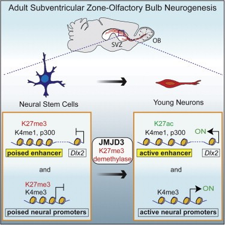

Chromatin regulators in neural development and disease
The ability of stem cells to self-renew and produce multiple daughter cell lineages requires the expression of certain sets of genes, repression of other loci, and transcriptional “plasticity” of many others. In normal development, such genome-wide transcriptional programs are in part regulated by chromatin structure – the “packaged” state of DNA with histone proteins. Genomic studies of neurodevelopmental and psychiatric disorders have revealed mutations in many chromatin regulators. Furthermore, chromatin regulators are frequently mutated or aberrantly expressed in brain tumors.
The Polycomb group (PcG) and trithorax group (trxG) factors are part of an evolutionarily conserved cellular “memory” system that specify cell identity by regulating the chromatin state of specific loci. We found that trxG member MLL1 is required for neurogenesis – but not gliogenesis – from neural stem cells (NSCs) in the adult mouse brain ventricular-subventricular zone (V-SVZ) (Lim, Nature, 2009; Potts, Neurosurgery, 2014). Without MLL1, key neurogenic genes are enriched with histone-3 lysine-27 trimethylation (H3K27me3), a chromatin modification that correlates with local transcriptional repression. In our studies of EZH2 – a PcG factor that catalyzes H3K27me3 – it does not appear that EZH2 is downregulated during neurogenesis (Hwang, eLIFE, 2014), suggesting that active removal of H3K27me3 is required for transcriptional activation. In support of this model, we discovered that the H3K27-demethylase JMJD3 is required for V-SVZ neurogenesis, de-repressing the chromatin state of transcriptional promoters and enhancers of neurogenic genes (Park, Cell Rep., 2014). Interestingly, in Mll1-deleted V-SVZ cells, JMJD3 does not localize to a key neurogenic enhancer, suggesting that MLL1 is required for the local recruitment of this H3K27-demethylase. Understanding the potential physical interactions between MLL1, JMJD3, and EZH2 at promoters and enhancers, and whether these factors interact with transcription factors for targeting to specific DNA regions represent current mechanistic research aims. Based on our studies of these chromatin regulators as well as Ink4a/Arf (Price, J Neurosci., 2014) – the locus most frequently inactivated in brain tumors – we are now working to determine whether these chromatin regulators are ideal therapeutic targets.
The brain develops from NSCs that have distinct regional identities, and defects in the positional information of NSCs result in abnormal brain development. Mutations in MLL1 have been identified as a cause of Wiedemann-Steiner syndrome, a disorder that includes developmental delay and autism. Our current data suggest that MLL1 maintains NSC regional identity during embryonic brain growth. The mechanisms that enable the “scaling” of developmental patterns during tissue growth are poorly understood. Given that the human brain grows to a very large size, the mechanisms of scaling are especially relevant to our understanding of human neurodevelopmental disorders.
Long non-coding RNAs (lncRNAs) in neural development
The mammalian genome transcribes many thousands of lncRNAs – transcripts >200 nucleotides long with no evidence of protein coding potential, and it is now clear that lncRNAs can have critical biological functions and roles in human neurological disease. Many lncRNAs interact with chromatin regulators and appear to regulate their function. In our recent annotation and genome-wide analysis of lncRNAs in the adult V-SVZ (Ramos, Cell Stem Cell, 2013), we identified a novel, evolutionarily conserved lncRNA transcript that is a potent regulator of neurogenesis. Using mass spectrometry, Western blot, and RNA immunoprecipitation analysis, we have identified proteins that specifically interact with this lncRNA. We are now working to determine the function of this lncRNA in vivo and the molecular mechanisms by which it regulates neurogenesis.
Development of novel neurosurgical devices for cell transplantation to the human brain
Intracerebral cell transplantation is being pursued as a treatment for many neurological diseases, and effective cell delivery is critical for clinical success. To facilitate intracerebral cell transplantation at the scale and complexity of the human brain, we developed a platform technology that enables radially branched deployment (RBD) of cells to multiple target locations at variable radial distances and depths along the initial brain penetration tract with real-time interventional magnetic resonance image (iMRI) guidance (Silvestrini, Mol Therapy, 2014). This iMRI-guided RBD device has been licensed to a medical device company (Accurexa, Inc.), and we are now working to commercialize the technology. We believe that this device will facilitate the clinical testing of cell, drug, and gene therapies that require direct delivery to the brain (reviewed in Potts, Surg Neurol Int., 2013).